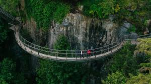
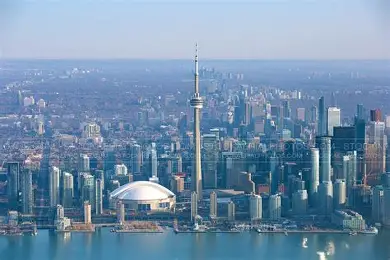

O Canadá é conhecido mundialmente por ser um dos países mais seguros do mundo, apresentando baixos índices de criminalidade e alta qualidade de vida. As cidades canadenses contam com policiamento eficiente, boa infraestrutura urbana e serviços públicos organizados, proporcionando tranquilidade tanto para moradores quanto para turistas.
O Canadá oferece diversas atrações turísticas, combinando paisagens naturais impressionantes com cidades modernas e multiculturais. Lugares como Toronto, Vancouver e Montreal atraem visitantes por sua cultura, gastronomia e arquitetura.
O Canadá possui uma cultura rica e diversificada, influenciada principalmente pelas tradições britânicas, francesas e indígenas. A valorização do respeito, da educação e da convivência multicultural faz parte do cotidiano canadense.Entre as tradições mais conhecidas estão os festivais culturais, os esportes de inverno — especialmente o hóquei no gelo — e as celebrações nacionais, como o Canada Day, comemorado em 1º de julho. A culinária canadense também se destaca por pratos típicos como o poutine e o uso tradicional do maple syrup.

Capilano Suspension Bridge
Park Alberta

Toronto
O Canadá é um dos países que mais investem em inovação e desenvolvimento tecnológico. O país possui centros de pesquisa avançados e empresas atuando nas áreas de inteligência artificial, telecomunicações, engenharia e tecnologia sustentável.Cidades como Toronto e Vancouver são reconhecidas como importantes polos tecnológicos, atraindo profissionais e estudantes do mundo inteiro. Além disso, universidades canadenses desenvolvem pesquisas de destaque internacional em diversas áreas científicas e tecnológicas.
O sistema de saúde do Canadá é reconhecido pela qualidade e pelo acesso universal oferecido à população. O governo financia grande parte dos serviços médicos, permitindo que cidadãos e residentes tenham acesso a consultas, exames e tratamentos essenciais.Os hospitais canadenses contam com boa estrutura, profissionais qualificados e investimentos em tecnologia médica. Além disso, o país promove campanhas de prevenção e incentivo à qualidade de vida, valorizando hábitos saudáveis e o acompanhamento médico regular..
Porque viajar para o Brasil